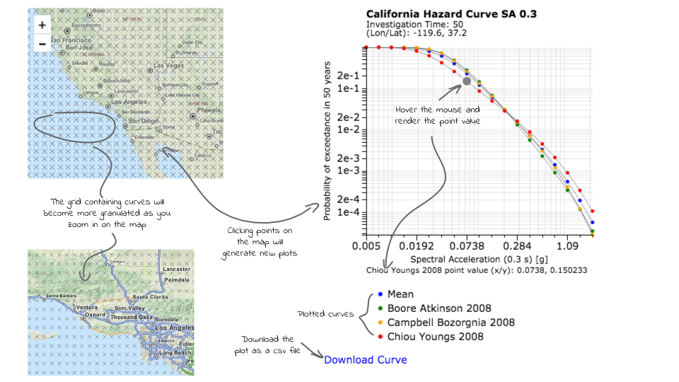
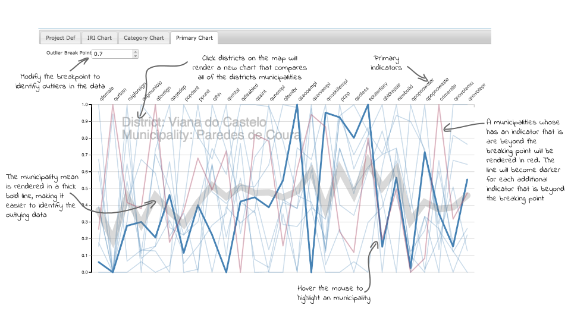
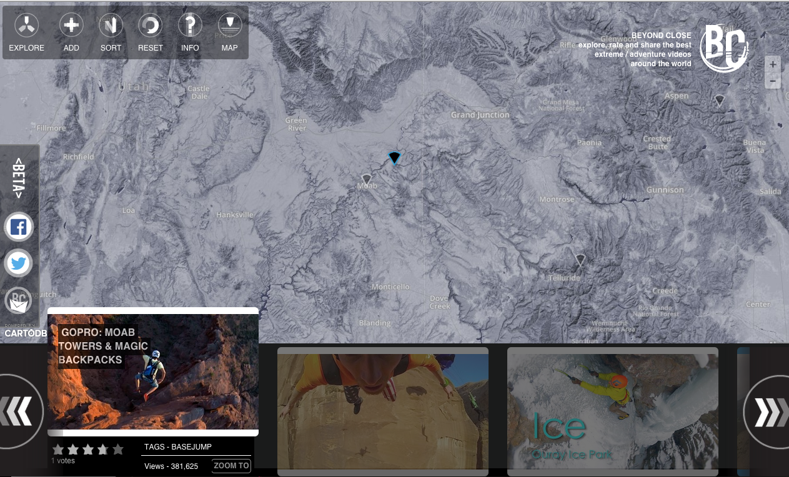

Benjamin Wyss
Portfolio
Map/data interactivity
As a part of my work with the GEM Foundation I have built several open source web mapping / data visualization tools.
This first demo shows an application built using LeafletJs, Leaflet.UtfGrids, UtfGrids, TileStream Server & d3.js.
Hazard and Risk Data Explorer
Map/data interactivity
Hazard and Risk Data Explorer
There are 740,000 hazard curves available in this layer.

Integrated Risk and Vulnerability
Built with d3.js, this application is used to identify data outliers
For fun project
A little application I built for fun that takes advantage of CartoDB and CartoDB.js BeyondClose.com
Recent Presentation
I recently presented at the annual FOSS4G conference in Portland Oregon:
Leaflet + UtfGrids + d3.js = liquid fast, massively scalable interactive web map & data visualization